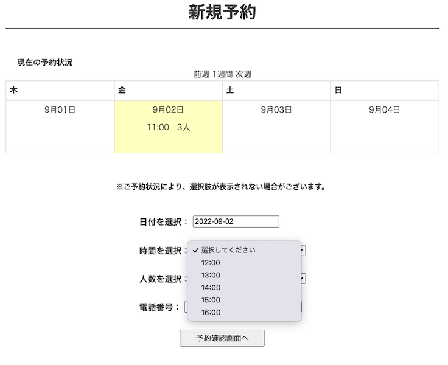
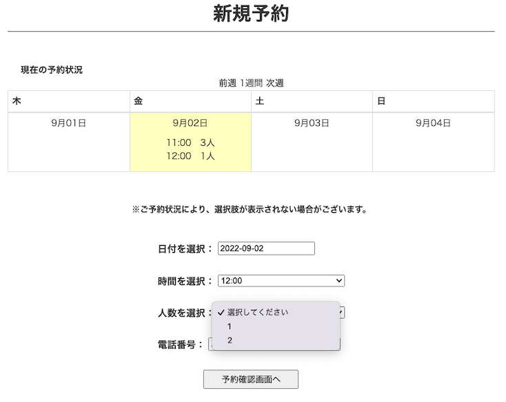
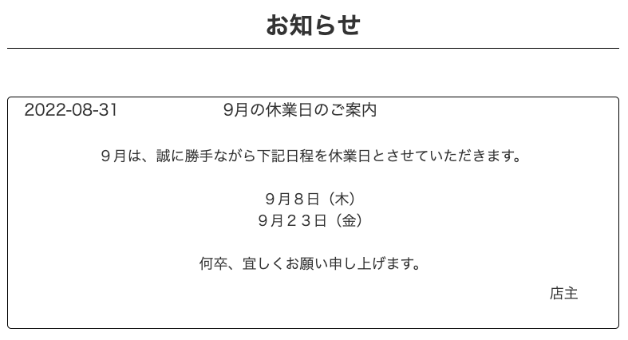

small-cafe app
開発環境
Ruby / Ruby on Rails / MySQL / GitHub / Heroku / Visual Studio Code
-
概要
制作時間 150時間 URL https://small-cafe.herokuapp.com/ ID kenken PASS 1275 -
動作テスト
テスト用アカウント
一般ユーザーmail sample@sample 一般ユーザーPASS 1sample 管理者mail admin@smallcafe 管理者PASS admin0711
OUTLINEアプリケーションの概要
オリジナルアプリケーションとして、実家で経営しているカフェのHP兼予約システムを作成しました。
主な機能は、HP機能、ユーザー登録機能、予約機能、管理者機能（お知らせ・予約機能）です。
トップページでは、各種メニューとお知らせ、コンセプトが表示されます。「店舗紹介」ボタンからは店舗の詳細情報ページ、「メニュー」ボタンからはメニューページへ遷移できます。
トップページから新規ユーザー登録を行なっていただくと、予約機能が使えます。ヘッダーの「予約する」ボタンを押すと現在のユーザーの予約状況確認ページへ進み、「新規予約する」ボタンを押すと新規予約ページへ遷移します。必要事項を入力し、「予約確認画面へ」ボタンを押すと予約確認画面へ遷移し入力した内容を表示させ確認を促します。「予約確定」ボタンを押すと予約され、最初の予約状況確認ページへ戻り、予約した内容が表示されます。予約した後は、予約のキャンセルも可能です。
トップページから、管理者権限を持つアカウントでログインすると、管理者機能としてお知らせ機能や予約機能、過去の予約一覧確認機能が使えます。ヘッダーの「お知らせ一覧」ボタンを押すと投稿したお知らせ一覧表示ページに遷移し、ここからお知らせ新規登録も行うことができます。投稿したお知らせは、編集・削除することも可能です。
管理者の予約機能としては、ヘッダーの「予約一覧」ボタンを押すことで現在入っている予約一覧確認画面へ遷移し、予約IDを押すことで各予約の詳細情報確認ページへ遷移できます。詳細確認ページでは、各予約のキャンセルも可能です。また、予約一覧確認画面から「新規予約する」ボタンを押すと新規予約ページへ、「過去の予約一覧」ボタンを押すと過去の予約一覧確認ページへの遷移もできます。一般のユーザーは1アカウントにつき1予約しか出来ないようにしておりますが、管理者は何件でも予約可能です。過去の予約一覧確認ページでは、検索フォームを設けており、キーワードもしくは日付（両方でも可）で絞り込むことができます。
-
開発に至った経緯
実家で経営している「小さな喫茶店」という、リビングを改装して営業しているカフェがあります。母が趣味で始めた、名前の通り小さな喫茶店です。
現在お店のHPが存在しておらず、また予約も母が手作業でメモを取るなどして行なっているため、より集客を図り、母の予約に対する負担軽減を目指したいと考え作成するに至りました。
-
開発で工夫したこと
 1つは、新規予約ページで、営業曜日のみ現在の予約状況をカレンダーで表示したことです。gemのsimple_calendarを利用し、編集することで実現しました。
ユーザーがこれを見れば、空いている箇所が一目で分かるので便利になると考え実装しました。2つ目は、予約状況に合わせて、予約時間と予約人数の選択肢の表示を変化させたことです。
そもそも予約のシステムとして、11:00~16:00までの各1時間毎に3人まで予約が出来る状態にしました。これは、小さな喫茶店なので予約人数が多くなり過ぎてしまうとかえって問題になってしまうと判断したからです。
その中で、例えばある日にちの11:00に既に3人の予約が入っていた場合、新規予約ページの時間帯を選択する欄には11:00という選択肢を表示させないようにしました。またもし2人の予約が入っていた場合は、時間の選択肢は表示されますが、人数の選択肢が1人のみになる、という工夫をしました。
こうすることで、ユーザーが誤った予約をしないよう制御する事が出来ると考え実装しました。3つ目は、予約が過去の日付になった時点で、自動で過去の予約一覧にアーカイブされる仕組みにしたことです。
時が経てば経つほど、予約は積み重なっていきます。予約一覧表示ページに全予約を表示したままでは可読性も操作性も悪いと考え、過去の予約として保存し直すシステムにすることにしました。
ただ、全てを手作業で移すのは手間がかかり逆に負担が増えてしまうため、cronを使用し毎日AM1:00に前日分の予約を全て別テーブルに移す作業を自動で行えるように実装しました。 -
今後実装したいと思っていること
・管理者が休業日を設定した場合、新規予約画面でその日の選択は出来ないようにすることです。現状では、お知らせで休業日を知らせることは出来ても、選択は出来てしまうので、管理者のページに休業日設定ページを作成し、設定した日付と連動して新規予約ページのカレンダーで選択出来ないように実装したいと考えております。
・ビューの充実化を図りたいと考えております。HPも兼ねていますが、現状では内容が薄いため、トップページにコンセプトを追加したり、メニューページに実際のメニューの写真を載せて説明文を記載することで充実化を図りたいと考えております。